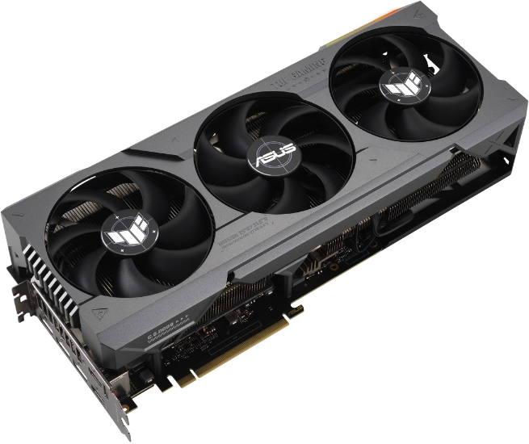
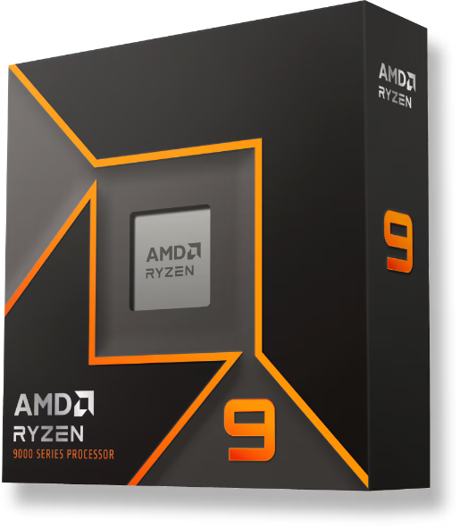
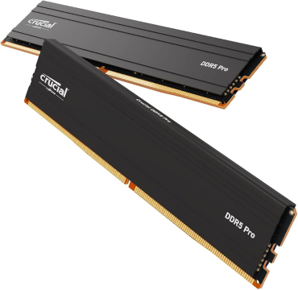
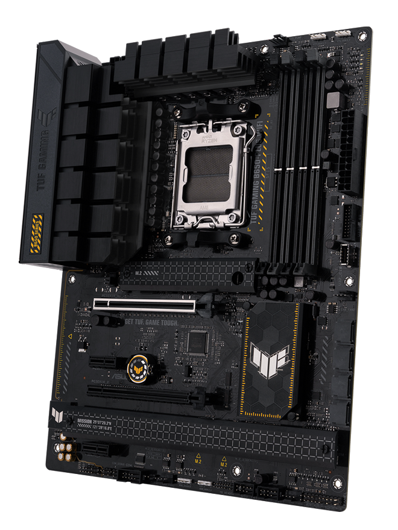
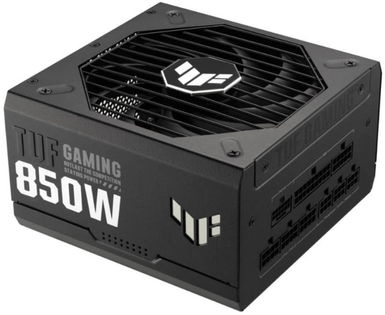
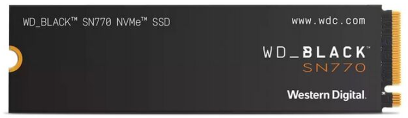

BuildingPC
Parts Introduction
自作パソコンパーツ紹介
ABOUT BUILDING PC
自作PC（パソコン）とは、CPUやメモリ、マザーボード、
グラフィックカードなどを自分で選んで組み立てるパソコンです。
自作PCのメリットは、自分の希望に沿ったパソコンを作れる、
パーツの組み換えができる、メンテナンスを自分でできるなどがあります。
PARTS LIST
-

- グラフィックボード(GPU)
- 最新ゲームを遊ぶうえで、もっとも重要なのがグラフィックボードです。
グラフィックボードとは、映像処理を専門に行う部品のことで、性能が高ければ高いほど、高画質な映像の処理を高速に行うことができます。
-

- 中央演算処理装置(CPU)
- 計算、情報の処理や他の部品の管理であり、コンピュータにおける司令塔の位置づけになります。
-

- メモリ
- CPUがパソコンを動かす際に必要な情報を「一時的に記憶」させて、CPUが直接アクセスするものです
-

- マザーボード
- パソコンの土台の役割を果たします。 パソコンの頭脳に当たるCPUをはじめ、グラフィックボードやメモリなどのパーツ、それらのパーツへの電源供給や相互通信を行うための回路の役割も果たす、パソコンになくてはならないパーツです。
-

- 電源ユニット
- 家庭用コンセントの交流電力を、パソコン内部のパーツが利用できる直流電力に変換して供給するものです。
-

- M.2 SSD
- ゲームなどのデータを保存しておくストレージです
DETAILED CPU 3DVCACHE MOVIE
RyzenCPU 3DVcacheについて詳しい解説
BUILD PC PICTURE


PCを組み立てている時の写真です。